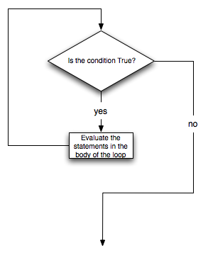

Table Of Contents
Previous topic
Next topic
Experimenting With the 3n+1 Sequence

Experimenting With the 3n+1 Sequence
Computers are often used to automate repetitive tasks. Repeating identical or similar tasks without making errors is something that computers do well and people do poorly.
Repeated execution of a sequence of statements is called iteration. Because iteration is so common, Python provides several language features to make it easier. We’ve already seen the for statement in Chapter 3. This is a very common form of iteration in Python. In this chapter we are also going to look at the while statement — another way to have your program do iteration.
Scratch Editor
Recall that the for loop processes each item in a list. Each item in turn is (re-)assigned to the loop variable, and the body of the loop is executed. We saw this example in an earlier chapter.
(ch07_for1)
We have also seen iteration paired with the update idea to form the accumulator pattern. For example, to compute the sum of the first n integers, we could create a for loop using the range to produce the numbers 1 thru n. Using the accumulator pattern, we can start with a running total and on each iteration, add the current value of the loop variable. A function to compute this sum is shown below.
(ch07_summation)
To review, the variable theSum is called the accumulator. It is initialized to zero before we start the loop. The loop variable, aNumber will take on the values produced by the range(1,aBound+1) function call. Note that this produces all the integers starting from 1 up to the value of aBound. If we had not added 1 to aBound, the range would have stopped one value short since range does not include the upper bound.
The assignment statement, theSum = theSum + aNumber, updates theSum each time thru the loop. This accumulates the running total. Finally, we return the value of the accumulator.
Scratch Editor
Check your understanding
7.2a.1: True or False: You can rewrite any for-loop as a while-loop.
7.2a.2: The following code contains an infinite loop. Which is the best explanation for why the loop does not terminate?
n = 10
answer = 1
while ( n > 0 ):
answer = answer + n
n = n + 1
print answer
There is another Python statement that can also be used to build an iteration. It is called the while statement. The while statement provides a much more general mechanism for iterating. Similar to the if statement, it uses a boolean expression to control the flow of execution. The body of while will be repeated as long as the controlling boolean expression evaluates to True.
The following figure shows the flow of control.
We can use the while loop to create any type of iteration we wish, including anything that we have previously done with a for loop. For example, the program in the previous section could be rewritten using while. Instead of relying on the range function to produce the numbers for our summation, we will need to produce them ourselves. To to this, we will create a variable called aNumber and initialize it to 1, the first number in the summation. Every iteration will add aNumber to the running total until all the values have been used. In order to control the iteration, we must create a boolean expression that evaluates to True as long as we want to keep adding values to our running total. In this case, as long as aNumber is less than or equal to the bound, we should keep going.
Here is a new version of the summation program that uses a while statement.
(ch07_while1)
You can almost read the while statement as if it were in natural language. It means, while aNumber is less than or equal to aBound, continue executing the body of the loop. Within the body, each time, update theSum using the accumulator pattern and increment aNumber. After the body of the loop, we go back up to the condition of the while and reevaluate it. When aNumber becomes greater than aBound, the condition fails and flow of control continues to the return statement.
The same program in codelens will allow you to observe the flow of execution.
|
Source Code
Step ? of ?
|
|
Program output:
|
Note
The names of the variables have been chosen to help readability.
More formally, here is the flow of execution for a while statement:
The body consists of all of the statements below the header with the same indentation.
This type of flow is called a loop because the third step loops back around to the top. Notice that if the condition is False the first time through the loop, the statements inside the loop are never executed.
The body of the loop should change the value of one or more variables so that eventually the condition becomes False and the loop terminates. Otherwise the loop will repeat forever. This is called an infinite loop. An endless source of amusement for computer scientists is the observation that the directions on shampoo, lather, rinse, repeat, are an infinite loop.
In the case shown above, we can prove that the loop terminates because we know that the value of n is finite, and we can see that the value of v increments each time through the loop, so eventually it will have to exceed n. In other cases, it is not so easy to tell.
Note
Introduction of the while statement causes us to think about the types of iteration we have seen. The for statement will always iterate through a sequence of values like the list of names for the party or the list of numbers created by range. Since we know that it will iterate once for each value in the collection, it is often said that a for loop creates a definite iteration because we definitely know how many times we are going to iterate. On the other hand, the while statement is dependent on a condition that needs to evaluate to False in order for the loop to terminate. Since we do not necessarily know when this will happen, it creates what we call indefinite iteration. Indefinite iteration simply means that we don’t know how many times we will repeat but eventually the condition controlling the iteration will fail and the iteration will stop. (Unless we have an infinite loop which is of course a problem)
What you will notice here is that the while loop is more work for you — the programmer — than the equivalent for loop. When using a while loop you have to control the loop variable yourself. You give it an initial value, test for completion, and then make sure you change something in the body so that the loop terminates.
So why have two kinds of loop if for looks easier? This next example shows an indefinite iteration where we need the extra power that we get from the while loop.
Scratch Editor
Check your understanding
7.2.1: True or False: You can rewrite any for-loop as a while-loop.
7.2.2: The following code contains an infinite loop. Which is the best explanation for why the loop does not terminate?
n = 10
answer = 1
while ( n > 0 ):
answer = answer + n
n = n + 1
print answer
Suppose we want to entertain ourselves by watching a turtle wander around randomly inside the screen. When we run the program we want the turtle and program to behave in the following way:
Notice that we cannot predict how many times the turtle will need to flip the coin before it wanders out of the screen, so we can’t use a for loop in this case. In fact, although very unlikely, this program might never end, that is why we call this indefinite iteration.
So based on the problem description above, we can outline a program as follows:
create a window and a turtle
while the turtle is still in the window:
generate a random number between 0 and 1
if the number == 0 (heads):
turn left
else:
turn right
move the turtle forward 50
Now, probably the only thing that seems a bit confusing to you is the part about whether or not the turtle is still in the screen. But this is the nice thing about programming, we can delay the tough stuff and get something in our program working right away. The way we are going to do this is to delegate the work of deciding whether the turtle is still in the screen or not to a boolean function. Lets call this boolean function isInScreen We can write a very simple version of this boolean function by having it always return True, or by having it decide randomly, the point is to have it do something simple so that we can focus on the parts we already know how to do well and get them working. Since having it always return true would not be a good idea we will write our version to decide randomly. Lets say that there is a 90% chance the turtle is still in the window and 10% that the turtle has escaped.
(iter_randwalk1)
Now we have a working program that draws a random walk of our turtle that has a 90% chance of staying on the screen. We are in a good position, because a large part of our program is working and we can focus on the next bit of work – deciding whether the turtle is inside the screen boundaries or not.
We can find out the width and the height of the screen using the window_width and window_height methods of the screen object. However, remember that the turtle starts at position 0,0 in the middle of the screen. So we never want the turtle to go farther right than width/2 or farther left than negative width/2. We never want the turtle to go further up than height/2 or further down than negative height/2. Once we know what the boundaries are we can use some conditionals to check the turtle position against the boundaries and return False if the turtle is outside or True if the turtle is inside.
Once we have computed our boundaries we can get the current position of the turtle and then use conditionals to decide. Here is one implementation:
def isInWindow(w,t):
leftBound = - wn.window_width()/2
rightBound = wn.window_width()/2
topBound = wn.window_height()/2
bottomBound = -wn.window_height()/2
turtleX = t.xcor()
turtleY = t.ycor()
stillIn = True
if turtleX > rightBound or turtleX < leftBound:
stillIn = False
if turtleY > topBound or turtleY < bottomBound:
stillIn = False
return stillIn
There are lots of ways that the conditional could be written. In this case we have given stillIn the default value of True and use two if statements to set the value to False. You could rewrite this to use nested conditionals or elif statements and set stillIn to True in an else clause.
Here is the full version of our random walk program.
(iter_randwalk2)
We could have written this program without using a boolean function, You might try to rewrite it using a complex condition on the while statement, but using a boolean function makes the program much more readable and easier to understand. It also gives us another tool to use if this was a larger program and we needed to have a check for whether the turtle was still in the screen in another part of the program. Another advantage is that if you ever need to write a similar program, you can reuse this function with confidence the next time you need it. Breaking up this program into a couple of parts is another example of functional decomposition.
Scratch Editor
Check your understanding
7.3.1: Which type of loop can be used to perform the following iteration: You choose a positive integer at random and then print the numbers from 1 up to and including the selected integer.
7.3.2: In the random walk program in this section, what does the isInScreen function do?
As another example of indefinite iteration, let’s look at a sequence that has fascinated mathematicians for many years. The rule for creating the sequence is to start from some given n, and to generate the next term of the sequence from n, either by halving n, whenever n is even, or else by multiplying it by three and adding 1 when it is odd. The sequence terminates when n reaches 1.
This Python function captures that algorithm. Try running this program several times supplying different values for n.
(ch07_indef1)
The condition for this loop is n != 1. The loop will continue running until n == 1 (which will make the condition false).
Each time through the loop, the program prints the value of n and then checks whether it is even or odd using the remainder operator. If it is even, the value of n is divided by 2 using integer division. If it is odd, the value is replaced by n * 3 + 1. Try some other examples.
Since n sometimes increases and sometimes decreases, there is no obvious proof that n will ever reach 1, or that the program terminates. For some particular values of n, we can prove termination. For example, if the starting value is a power of two, then the value of n will be even each time through the loop until it reaches 1.
You might like to have some fun and see if you can find a small starting number that needs more than a hundred steps before it terminates.
Lab
Particular values aside, the interesting question is whether we can prove that this sequence terminates for all values of n. So far, no one has been able to prove it or disprove it!
Think carefully about what would be needed for a proof or disproof of the hypothesis “All positive integers will eventually converge to 1”. With fast computers we have been able to test every integer up to very large values, and so far, they all eventually end up at 1. But this doesn’t mean that there might not be some as-yet untested number which does not reduce to 1.
You’ll notice that if you don’t stop when you reach one, the sequence gets into its own loop: 1, 4, 2, 1, 4, 2, 1, 4, and so on. One possibility is that there might be other cycles that we just haven’t found.
Choosing between for and while
Use a for loop if you know the maximum number of times that you’ll need to execute the body. For example, if you’re traversing a list of elements, or can formulate a suitable call to range, then choose the for loop.
So any problem like “iterate this weather model run for 1000 cycles”, or “search this list of words”, “check all integers up to 10000 to see which are prime” suggest that a for loop is best.
By contrast, if you are required to repeat some computation until some condition is met, as we did in this 3n + 1 problem, you’ll need a while loop.
As we noted before, the first case is called definite iteration — we have some definite bounds for what is needed. The latter case is called indefinite iteration — we are not sure how many iterations we’ll need — we cannot even establish an upper bound!
Scratch Editor
Check your understanding
7.4.1: Consider the code that prints the 3n+1 sequence in ActiveCode box 6. Will the while loop in this code always terminate for any value of n?
Loops are often used in programs that compute numerical results by starting with an approximate answer and iteratively improving it.
For example, one way of computing square roots is Newton’s method. Suppose that you want to know the square root of n. If you start with almost any approximation, you can compute a better approximation with the following formula:
better = 1/2 * (approx + n/approx)
Execute this algorithm a few times using your calculator. Can you see why each iteration brings your estimate a little closer? One of the amazing properties of this particular algorithm is how quickly it converges to an accurate answer.
The following implementation of Newton’s method requires two parameters. The first is the value whose square root will be approximated. The second is the number of times to iterate the calculation yielding a better result.
(chp07_newtonsdef)
You may have noticed that the second and third calls to newtonSqrt in the previous example both returned the same value for the square root of 10. Using 10 iterations instead of 5 did not improve the the value. In general, Newton’s algorithm will eventually reach a point where the new approximation is no better than the previous. At that point, we could simply stop. In other words, by repeatedly applying this formula until the better approximation gets close enough to the previous one, we can write a function for computing the square root that uses the number of iterations necessary and no more.
This implementation, shown in codelens, uses a while condition to execute until the approximation is no longer changing. Each time thru the loop we compute a “better” approximation using the formula described earlier. As long as the “better” is different, we try again. Step thru the program and watch the approximations get closer and closer.
|
Source Code
Step ? of ?
|
|
Program output:
|
Note
The while statement shown above uses comparison of two floating point numbers in the condition. Since floating point numbers are themselves approximation of real numbers in mathematics, it is often better to compare for a result that is within some small threshold of the value you are looking for.
Scratch Editor
Newton’s method is an example of an algorithm: it is a mechanical process for solving a category of problems (in this case, computing square roots).
It is not easy to define an algorithm. It might help to start with something that is not an algorithm. When you learned to multiply single-digit numbers, you probably memorized the multiplication table. In effect, you memorized 100 specific solutions. That kind of knowledge is not algorithmic.
But if you were lazy, you probably cheated by learning a few tricks. For example, to find the product of n and 9, you can write n - 1 as the first digit and 10 - n as the second digit. This trick is a general solution for multiplying any single-digit number by 9. That’s an algorithm!
Similarly, the techniques you learned for addition with carrying, subtraction with borrowing, and long division are all algorithms. One of the characteristics of algorithms is that they do not require any intelligence to carry out. They are mechanical processes in which each step follows from the last according to a simple set of rules.
On the other hand, understanding that hard problems can be solved by step-by-step algorithmic processess is one of the major simplifying breakthroughs that has had enormous benefits. So while the execution of the algorithm may be boring and may require no intelligence, algorithmic or computational thinking is having a vast impact. It is the process of designing algorithms that is interesting, intellectually challenging, and a central part of what we call programming.
Some of the things that people do naturally, without difficulty or conscious thought, are the hardest to express algorithmically. Understanding natural language is a good example. We all do it, but so far no one has been able to explain how we do it, at least not in the form of a step-by-step mechanical algorithm.
Scratch Editor
One of the things loops are good for is generating tabular data. Before computers were readily available, people had to calculate logarithms, sines and cosines, and other mathematical functions by hand. To make that easier, mathematics books contained long tables listing the values of these functions. Creating the tables was slow and boring, and they tended to be full of errors.
When computers appeared on the scene, one of the initial reactions was, “This is great! We can use the computers to generate the tables, so there will be no errors.” That turned out to be true (mostly) but shortsighted. Soon thereafter, computers and calculators were so pervasive that the tables became obsolete.
Well, almost. For some operations, computers use tables of values to get an approximate answer and then perform computations to improve the approximation. In some cases, there have been errors in the underlying tables, most famously in the table the Intel Pentium processor chip used to perform floating-point division.
Although a power of 2 table is not as useful as it once was, it still makes a good example of iteration. The following program outputs a sequence of values in the left column and 2 raised to the power of that value in the right column:
(ch07_table1)
The string '\t' represents a tab character. The backslash character in '\t' indicates the beginning of an escape sequence. Escape sequences are used to represent invisible characters like tabs and newlines. The sequence \n represents a newline.
An escape sequence can appear anywhere in a string. In this example, the tab escape sequence is the only thing in the string. How do you think you represent a backslash in a string?
As characters and strings are displayed on the screen, an invisible marker called the cursor keeps track of where the next character will go. After a print function, the cursor normally goes to the beginning of the next line.
The tab character shifts the cursor to the right until it reaches one of the tab stops. Tabs are useful for making columns of text line up, as in the output of the previous program. Because of the tab characters between the columns, the position of the second column does not depend on the number of digits in the first column.
Scratch Editor
Check your understanding
7.7.1: What is the difference between a tab (\t) and a sequence of spaces?
Two dimensional tables have both rows and columns. You have probably seen many tables like this if you have used a spreadsheet program. Another object that is organized in rows and columns is a digital image. In this section we will explore how iteration allows us to manipulate these images.
A digital image is a finite collection of small, discrete picture elements called pixels. These pixels are organized in a two-dimensional grid. Each pixel represents the smallest amount of picture information that is available. Sometimes these pixels appear as small “dots”.
Each image (grid of pixels) has its own width and its own height. The width is the number of columns and the height is the number of rows. We can name the pixels in the grid by using the column number and row number. However, it is very important to remember that computer scientists like to start counting with 0! This means that if there are 20 rows, they will be named 0,1,2, and so on thru 19. This will be very useful later when we iterate using range.
In the figure below, the pixel of interest is found at column c and row r.

Each pixel of the image will represent a single color. The specific color depends on a formula that mixes various amounts of three basic colors: red, green, and blue. This technique for creating color is known as the RGB Color Model. The amount of each color, sometimes called the intensity of the color, allows us to have very fine control over the resulting color.
The minimum intensity value for a basic color is 0. For example if the red intensity is 0, then there is no red in the pixel. The maximum intensity is 255. This means that there are actually 256 different amounts of intensity for each basic color. Since there are three basic colors, that means that you can create 2563 distinct colors using the RGB Color Model.
Here are the red, green and blue intensities for some common colors. Note that “Black” is represented by a pixel having no basic color. On the other hand, “White” has maximum values for all three basic color components.
Color Red Green Blue Red 255 0 0 Green 0 255 0 Blue 0 0 255 White 255 255 255 Black 0 0 0 Yellow 255 255 0 Magenta 255 0 255
In order to manipulate an image, we need to be able to access individual pixels. This capability is provided by a module called image. The image module defines two classes: Image and Pixel.
Each Pixel object has three attributes: the red intensity, the green intensity, and the blue intensity. A pixel provides three methods that allow us to ask for the intensity values. They are called getRed, getGreen, and getBlue. In addition, we can ask a pixel to change an intensity value using its setRed, setGreen, and setBlue methods.
Method Name Example Explanation Pixel(r,g,b) Pixel(20,100,50) Create a new pixel with 20 red, 100 green, and 50 blue. getRed() r = p.getRed() Return the red component intensity. getGreen() r = p.getGreen() Return the green component intensity. getBlue() r = p.getBlue() Return the blue component intensity. setRed() p.setRed(100) Set the red component intensity to 100. setGreen() p.setGreen(45) Set the green component intensity to 45. setBlue() p.setBlue(156) Set the blue component intensity to 156.
In the example below, we first create a pixel with 45 units of red, 76 units of green, and 200 units of blue. We then print the current amount of red, change the amount of red, and finally, set the amount of blue to be the same as the current amount of green.
(pixelex1a)
Check your understanding
7.8.1.1: If you have a pixel whose RGB value is (20, 0, 0), what color will this pixel appear to be?
To access the pixels in a real image, we need to first create an Image object. Image objects can be created in two ways. First, an Image object can be made from the files that store digital images. The image object has an attribute corresponding to the width, the height, and the collection of pixels in the image.
It is also possible to create an Image object that is “empty”. An EmptyImage has a width and a height. However, the pixel collection consists of only “White” pixels.
We can ask an image object to return its size using the getWidth and getHeight methods. We can also get a pixel from a particular location in the image using getPixel and change the pixel at a particular location using setPixel.
The Image class is shown below. Note that the first two entries show how to create image objects. The parameters are different depending on whether you are using an image file or creating an empty image.
Method Name Example Explanation Image(filename) img = image.Image(“cy.png”) Create an Image object from the file cy.png. EmptyImage() img = image.EmptyImage(100,200) Create an Image object that has all “White” pixels getWidth() w = img.getWidth() Return the width of the image in pixels. getHeight() h = img.getHeight() Return the height of the image in pixels. getPixel(col,row) p = img.getPixel(35,86) Return the pixel at column 35, row 86d. setPixel(col,row,p) img.setPixel(100,50,mp) Set the pixel at column 100, row 50 to be mp.
Consider the image shown below. Assume that the image is stored in a file called “luther.jpg”. Line 2 opens the file and uses the contents to create an image object that is referred to by img. Once we have an image object, we can use the methods described above to access information about the image or to get a specific pixel and check on its basic color intensities.

(pixelex1)
When you run the program you can see that the image has a width of 400 pixels and a height of 244 pixels. Also, the pixel at column 45, row 55, has RGB values of 165, 161, and 158. Try a few other pixel locations by changing the getPixel arguments and rerunning the program.
Check your understanding
7.8.2.1: In the example in ActiveCode box 10, what are the RGB values of the pixel at row 100, column 30?
Image processing refers to the ability to manipulate the individual pixels in a digital image. In order to process all of the pixels, we need to be able to systematically visit all of the rows and columns in the image. The best way to do this is to use nested iteration.
Nested iteration simply means that we will place one iteration construct inside of another. We will call these two iterations the outer iteration and the inner iteration. To see how this works, consider the simple iteration below.
for i in range(5):
print(i)
We have seen this enough times to know that the value of i will be 0, then 1, then 2, and so on up to 4. The print will be performed once for each pass. However, the body of the loop can contain any statements including another iteration (another for statement). For example,
for i in range(5):
for j in range(3):
print(i,j)
The for i iteration is the outer iteration and the for j iteration is the inner iteration. Each pass thru the outer iteration will result in the complete processing of the inner iteration from beginning to end. This means that the output from this nested iteration will show that for each value of i, all values of j will occur.
Here is the same example in activecode. Try it. Note that the value of i stays the same while the value of j changes. The inner iteration, in effect, is moving faster than the outer iteration.
(nested1)
Another way to see this in more detail is to examine the behavior with codelens. Step thru the iterations to see the flow of control as it occurs with the nested iteration. Again, for every value of i, all of the values of j will occur. You can see that the inner iteration completes before going on to the next pass of the outer iteration.
|
Source Code
Step ? of ?
|
|
Program output:
|
Our goal with image processing is to visit each pixel. We will use an iteration to process each row. Within that iteration, we will use a nested iteration to process each column. The result is a nested iteration, similar to the one seen above, where the outer for loop processes the rows, from 0 up to but not including the height of the image. The inner for loop will process each column of a row, again from 0 up to but not including the width of the image.
The resulting code will look like the following. We are now free to do anything we wish to each pixel in the image.
for col in range(img.getWidth()):
for row in range(img.getHeight()):
#do something with the pixel at position (col,row)
One of the easiest image processing algorithms will create what is known as a negative image. A negative image simply means that each pixel will be the opposite of what it was originally. But what does opposite mean?
In the RGB color model, we can consider the opposite of the red component as the difference between the original red and 255. For example, if the original red component was 50, then the opposite, or negative red value would be 255-50 or 205. In other words, pixels with alot of red will have negatives with little red and pixels with little red will have negatives with alot. We do the same for the blue and green as well.
The program below implements this algorithm using the previous image. Run it to see the resulting negative image. Note that there is alot of processing taking place and this may take a few seconds to complete. In addition, here are two other images that you can use. Change the name of the file in the image.Image() call to see how these images look as negatives. Also, note that there is an exitonclick method call at the very end which will close the window when you click on it. This will allow you to “clear the screen” before drawing the next negative.
 cy.png
cy.png goldygopher.png
goldygopher.png
(acimg_1)
Lets take a closer look at the code. After importing the image module, we create two image objects. The first, img, represents a typical digital photo. The second, newimg, is an empty image that will be “filled in” as we process the original pixel by pixel. Note that the width and height of the empty image is set to be the same as the width and height of the original.
Lines 8 and 9 create the nested iteration that we discussed earlier. This allows us to process each pixel in the image. Line 10 gets an individual pixel.
Lines 12-14 create the negative intensity values by extracting the original intensity from the pixel and subtracting it from 255. Once we have the newred, newgreen, and newblue values, we can create a new pixel (Line 16).
Finally, we need to insert the new pixel into the empty image in the same location as the original pixel that it came from in the digital photo.
Other pixel manipulation
There are a number of different image processing algorithms that follow the same pattern as shown above. Namely, take the original pixel, extract the red, green, and blue intensities, and then create a new pixel from them. The new pixel is inserted into an empty image at the same location as the original.
For example, you can create a gray scale pixel by averaging the red, green and blue intensities and then using that value for all intensities.
From the gray scale you can create black white by setting a threshold and selecting to either insert a white pixel or a black pixel into the empty image.
You can also do some complex arithmetic and create interesting effects, such as Sepia Tone
Scratch Editor
You have just passed a very important point in your study of Python programming. Even though there is much more that we will do, you have learned all of the basic building blocks that are necessary to solve many interesting problems. From and algorithm point of view, you can now implement selection and iteration. You can also solve problems by breaking them down into smaller parts, writing functions for those parts, and then calling the functions to complete the implementation. What remains is to focus on ways that we can better represent our problems in terms of the data that we manipulate. We will now turn our attention to studying the main data collections provided by Python.
Check your understanding
7.8.3.1: What will the following nested for-loop print? (Note, if you are having trouble with this question, review CodeLens 3).
for i in range(3):
for j in range(2):
print(i,j)
a.
0 0 0 1 1 0 1 1 2 0 2 1b.
0 0 1 0 2 0 0 1 1 1 2 1c.
0 0 0 1 0 2 1 0 1 1 1 2d.
0 1 0 1 0 1
7.8.3.2: What would the image produced from ActiveCode box 12 look like if you replaced the lines:
newred = 255-p.getRed() newgreen = 255-p.getGreen() newblue = 255-p.getBlue()with the lines:
newred = p.getRed() newgreen = 0 newblue = 0
This chapter showed us how to sum a list of items, and how to count items. The counting example also had an if statement that let us only count some selected items. In the previous chapter we also showed a function find_first_2_letter_word that allowed us an “early exit” from inside a loop by using return when some condition occurred. We now also have break to exit a loop (but not the enclosing function, and continue to abandon the current iteration of the loop without ending the loop.
Composition of list traversal, summing, counting, testing conditions and early exit is a rich collection of building blocks that can be combined in powerful ways to create many functions that are all slightly different.
The first six questions are typical functions you should be able to write using only these building blocks.
Add a print function to Newton’s sqrt function that prints out better each time it is calculated. Call your modified function with 25 as an argument and record the results.
Write a function print_triangular_numbers(n) that prints out the first n triangular numbers. A call to print_triangular_numbers(5) would produce the following output:
1 1
2 3
3 6
4 10
5 15
(hint: use a web search to find out what a triangular number is.)
Write a function, is_prime, which takes a single integer argument and returns True when the argument is a prime number and False otherwise.
Write a function that will return the number of digits in an integer.
Write a function sum_of_squares(xs) that computes the sum of the squares of the numbers in the list xs. For example, sum_of_squares([2, 3, 4]) should return 4+9+16 which is 29:
Modify the the Random turtle walk program so that the turtle turns around when it hits the wall and goes the other direction. This bouncing off the walls should continue until the turtle has hit the wall 4 times.
Modify the previous program so that you have two turtles each with a random starting location. Keep the turtles moving and bouncing off the walls until they collide with each other.
Modify the previous program so that rather than a left or right turn the angle of the turn is determined randomly at each step. When the turtle hits the wall you must calculate the correct angle for the bounce.
Write a function to remove all the red from an image.
Write a function to convert the image to grayscale.
Write a function to convert an image to black and white.
Sepia Tone images are those brownish colored images that may remind you of times past. The formula for creating a sepia tone is as follows:
newR = (R × 0.393 + G × 0.769 + B × 0.189)
newG = (R × 0.349 + G × 0.686 + B × 0.168)
newB = (R × 0.272 + G × 0.534 + B × 0.131)
Write a function to convert an image to sepia tone. Hint: Remember that rgb values must be integers between 0 and 255.
Write a function to uniformly shrink or enlarge an image. Your function should take an image along with a scaling factor. To shrink the image the scale factor should be between 0 and 1 to enlarge the image the scaling factor should be greater than 1.
Write a function to rotate an image. Your function should take an image object along with the number of degrees to rotate. The rotational degrees can be positive or negative, and should be multiples of 90.
After you have scaled an image too much it looks blocky. One way of reducing the blockiness of the image is to replace each pixel with the average values of the pixels around it. This has the effect of smoothing out the changes in color. Write a function that takes an image as a parameter and smooths the image. Your function should return a new image that is the same as the old but smoothed.
When you scan in images using a scanner they may have lots of noise due to dust particles on the image itself or the scanner itself, or the images may even be damaged. One way of eliminating this noise is to replace each pixel by the median value of the pixels surrounding it.
Research the Sobel edge detection algorithm and implement it.